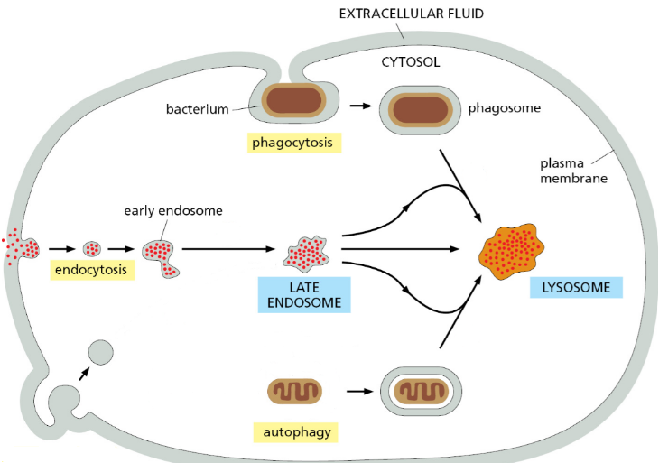
6 Autophagy of Protein Aggregates and Mitochondria
6.1 Autophagy Mechanisms
Autophagy is a cellular process responsible for the degradation and recycling of damaged or unnecessary cellular components, including protein aggregates and dysfunctional organelles such as mitochondria. Here’s how autophagy mechanisms work in directing degradation targets to lysosomes:
Initiation of Autophagy: Autophagy is initiated in response to various cellular stresses, such as nutrient deprivation, oxidative stress, or protein aggregation. The initiation phase involves the activation of key autophagy-related proteins, including the ULK1 (unc-51 like autophagy activating kinase 1) complex and the class III phosphatidylinositol 3-kinase (PI3K) complex.
Formation of Autophagosome: Once initiated, autophagy progresses through several steps, including the formation of a specialized double-membrane structure called the autophagosome. The autophagosome sequesters cellular components targeted for degradation, including protein aggregates and dysfunctional organelles such as mitochondria.
Targeting Degradation Targets: Selective autophagy mechanisms enable the specific targeting of degradation targets to autophagosomes. In the case of protein aggregates, selective autophagy receptors, such as p62/SQSTM1 (sequestosome 1), recognize ubiquitinated proteins and bind to both the cargo and the autophagosomal membrane, facilitating their engulfment into autophagosomes. Similarly, dysfunctional mitochondria are targeted for degradation through selective autophagy receptors, such as NIX (also known as BNIP3L) and FUNDC1, which recognize damaged mitochondria and recruit them to autophagosomes.
Fusion with Lysosomes: Following sequestration of cargo, autophagosomes undergo fusion with lysosomes to form autolysosomes. Lysosomes contain acidic hydrolases that degrade the engulfed cargo, resulting in the breakdown of proteins, lipids, nucleic acids, and other cellular components. This process releases the breakdown products, such as amino acids and fatty acids, for reuse by the cell.
Degradation and Recycling: Within autolysosomes, the cargo undergoes degradation by lysosomal enzymes. Proteins are degraded into amino acids, which can be recycled for protein synthesis or used as an energy source. Lipids are broken down into fatty acids, while nucleic acids are degraded into nucleotides. This degradation process ensures the removal of damaged or unnecessary cellular components and contributes to cellular homeostasis and survival.
6.1.1 From Cytosol to Lysosome
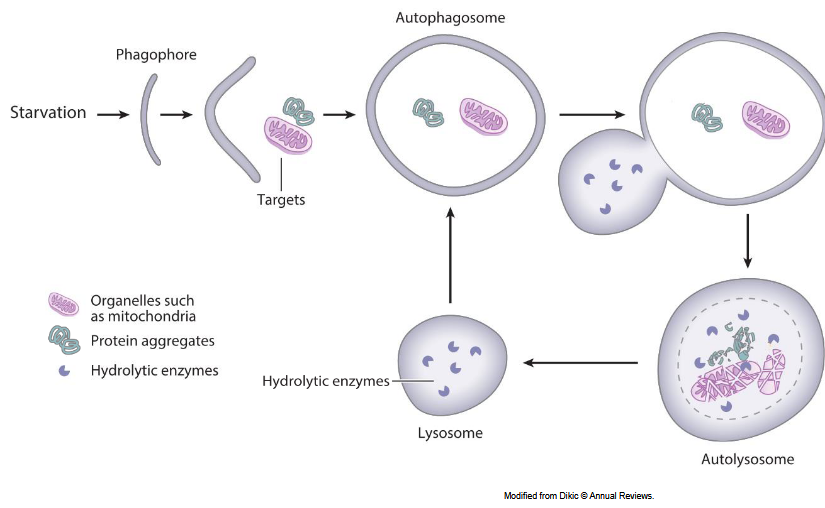
The journey of autophagy from the cytosol to the lysosome involves several key steps:
Initiation: Autophagy is initiated in response to various cellular stresses, such as nutrient deprivation, oxidative stress, or protein aggregation. The initiation phase involves the activation of autophagy-related proteins, including the ULK1 (unc-51 like autophagy activating kinase 1) complex and the class III phosphatidylinositol 3-kinase (PI3K) complex.
Formation of Phagophore: Once initiated, autophagy progresses with the formation of a phagophore, a crescent-shaped membrane structure derived from the endoplasmic reticulum (ER) or other membrane sources. The phagophore expands and engulfs cellular components targeted for degradation, including protein aggregates and dysfunctional organelles.
Formation of Autophagosome: The edges of the phagophore seal to form a double-membrane vesicle called the autophagosome. The autophagosome encloses the cargo, sequestering it from the cytoplasm and creating a protective environment for degradation.
Lysosomal Fusion: The autophagosome then undergoes fusion with lysosomes, which are membrane-bound organelles containing acidic hydrolases. This fusion forms a structure called the autolysosome, where degradation occurs. Lysosomes provide the enzymes necessary for breaking down the engulfed cargo.
Cargo Degradation: Within the autolysosome, the cargo is exposed to the acidic pH and the enzymatic activity of lysosomal hydrolases. Proteins are degraded into amino acids, lipids into fatty acids, and nucleic acids into nucleotides. These breakdown products are then released back into the cytoplasm for reuse by the cell.
Recycling and Reuse: The degraded components are recycled and can be used for various cellular processes, such as protein synthesis, energy production, or the maintenance of cellular membranes. This recycling process ensures the efficient utilization of cellular resources and contributes to cellular homeostasis.
6.1.2 Autophagy in Yeast
6.1.2.1 ATG Genes
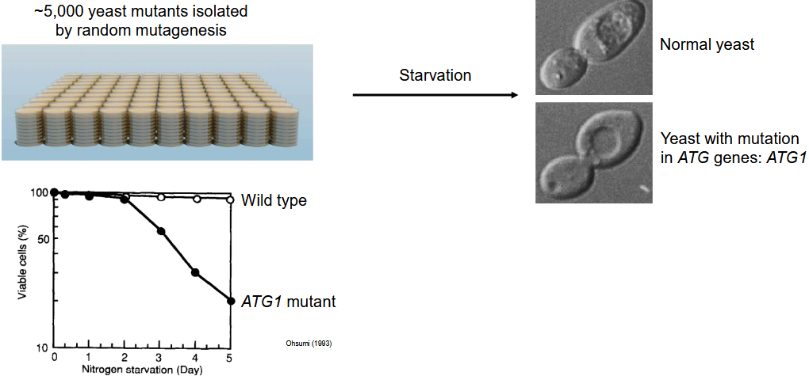
Autophagy was first discovered in yeast, particularly Saccharomyces cerevisiae, by Dr. Yoshinori Ohsumi, who was awarded the Nobel Prize in Physiology or Medicine in 2016 for his groundbreaking work. Dr. Ohsumi’s research led to the identification of a set of genes essential for autophagy, known as autophagy-related genes or ATG genes.
The discovery of ATG genes provided key insights into the molecular mechanisms underlying autophagy and paved the way for understanding the process in other organisms, including humans. By systematically studying yeast mutants defective in autophagy, Dr. Ohsumi and his team identified a series of genes involved in autophagosome formation, cargo recognition, and lysosomal degradation.
Some of the key ATG genes identified in yeast include ATG1, ATG5, ATG6 (also known as VPS30), ATG8, and ATG12. These genes encode proteins that play crucial roles in different stages of the autophagy pathway, from the initiation of autophagosome formation to the fusion of autophagosomes with lysosomes.
ATG1 is a protein kinase involved in the initiation of autophagy, while ATG5 and ATG12 are involved in the conjugation of Atg8 (LC3 in mammals) to phosphatidylethanolamine, a critical step in autophagosome formation. ATG6/VPS30 is a subunit of the phosphatidylinositol 3-kinase (PI3K) complex, which regulates the nucleation of autophagosomal membranes.
6.1.3 Autophagosome
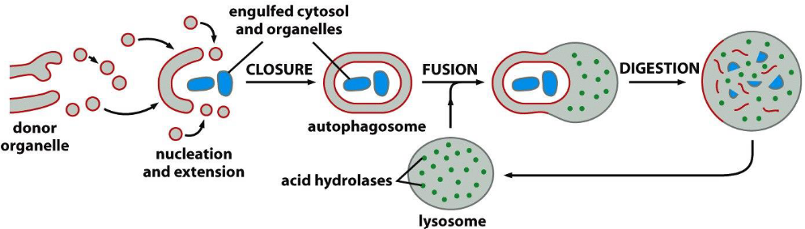
The autophagosome is a double-membraned vesicle that plays a central role in the process of autophagy, serving as the primary structure for sequestering and transporting cellular components destined for degradation within the lysosome. Here’s a closer look at the structure and function of the autophagosome:
Double-Membraned Structure: The autophagosome is characterized by its double-membraned structure, comprising an inner membrane and an outer membrane. These membranes are derived from various cellular sources, including the endoplasmic reticulum (ER), Golgi apparatus, plasma membrane, and mitochondria, among others.
Formation: The formation of autophagosomes begins with the nucleation of a small membrane structure, known as the phagophore or isolation membrane. The phagophore expands and engulfs cytoplasmic components, including protein aggregates, damaged organelles, and invading pathogens, to form the autophagosome.
Sequestration of Cargo: As the phagophore expands, it sequesters cytoplasmic cargo within its lumen, encapsulating it within the double-membraned vesicle. This sequestration process allows for the selective targeting and isolation of cellular components destined for degradation, while excluding essential cellular structures from degradation.
Maturation: Once formed, autophagosomes undergo maturation through a series of fusion events. They fuse with endosomes to form amphisomes, which subsequently fuse with lysosomes to form autolysosomes. These fusion events enable the delivery of autophagosomal cargo to lysosomes for degradation.
Degradation of Cargo: Within autolysosomes, the acidic environment and the presence of lysosomal hydrolases facilitate the degradation of the sequestered cargo. Proteins, lipids, nucleic acids, and other cellular components are broken down into their constituent molecules, which can then be recycled by the cell.
Role in Cellular Homeostasis: The autophagosome serves as a critical component of the cellular quality control system, allowing cells to eliminate damaged or unnecessary cellular components and maintain cellular homeostasis. Dysregulation of autophagosome formation and function has been implicated in various diseases, including neurodegenerative disorders, cancer, and metabolic diseases.
6.1.4 Selective and Non-Selective Autophagy
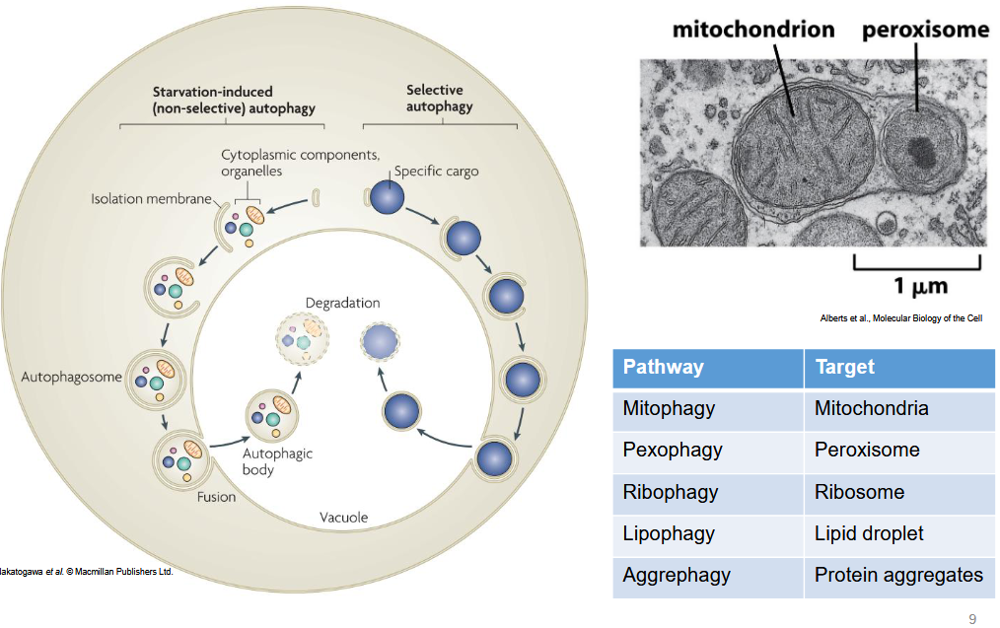
Autophagy is a highly regulated process that can be categorized into two main types based on the specificity of the cargo targeted for degradation: selective autophagy and non-selective autophagy.
- Selective Autophagy: Selective autophagy involves the targeted degradation of specific cellular components, such as damaged organelles, protein aggregates, or invading pathogens. Selective autophagy receptors recognize and bind to cargo destined for degradation, facilitating their engulfment into autophagosomes. Examples of selective autophagy include:
- Mitophagy: Selective degradation of damaged or dysfunctional mitochondria.
- Aggrephagy: Clearance of protein aggregates and inclusion bodies.
- Pexophagy: Elimination of peroxisomes.
- Lipophagy: Degradation of lipid droplets.
- Xenophagy: Removal of intracellular pathogens, such as bacteria or viruses.
- Non-Selective Autophagy (Bulk Autophagy): Non-selective autophagy, also known as bulk autophagy, involves the indiscriminate degradation of cytoplasmic components to maintain cellular homeostasis during nutrient deprivation or other stress conditions. In non-selective autophagy, autophagosomes engulf cytoplasmic material randomly without specific cargo recognition. This form of autophagy is essential for recycling cellular constituents and generating nutrients and energy for cell survival during periods of stress.
6.1.4.1 Types of Autophagy
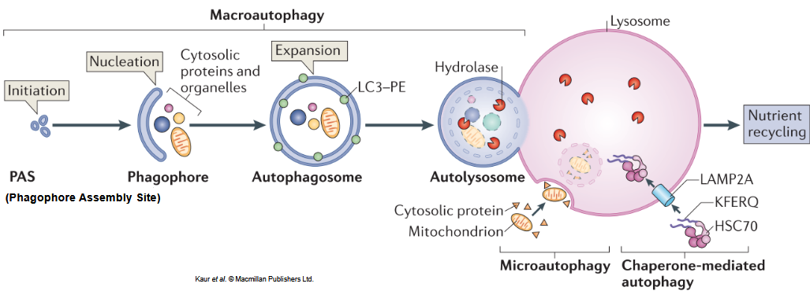
The three different types of autophagy are:
Macroautophagy: Macroautophagy, often simply referred to as autophagy, involves the sequestration of cytosolic components within double-membraned organelles called autophagosomes. These autophagosomes then fuse with lysosomes to form autolysosomes, where the engulfed cargo is degraded by lysosomal enzymes. Macroautophagy plays a fundamental role in the turnover of cellular components and the maintenance of cellular homeostasis.
Microautophagy: Microautophagy involves the direct engulfment of cytosolic components by lysosomes through invagination of the lysosomal membrane. Unlike macroautophagy, which involves the formation of autophagosomes, microautophagy occurs through direct membrane rearrangements at the lysosomal surface. Microautophagy contributes to the selective degradation of cytoplasmic constituents and plays a role in nutrient recycling and cellular quality control.
Chaperone-Mediated Autophagy (CMA): Chaperone-Mediated Autophagy (CMA) is a selective form of autophagy that targets specific cytosolic proteins for degradation. In CMA, chaperone proteins such as heat shock cognate 70 (HSC-70) recognize and bind to target proteins bearing a specific targeting motif. The chaperone-protein complex then interacts with lysosomal-associated membrane protein-2A (LAMP2A) on the lysosomal membrane, leading to the translocation of the unfolded target protein into the lysosome for degradation. CMA is essential for the removal of damaged or misfolded proteins and plays a role in cellular quality control and protein homeostasis.
6.1.5 Phospholipids in Bilayer
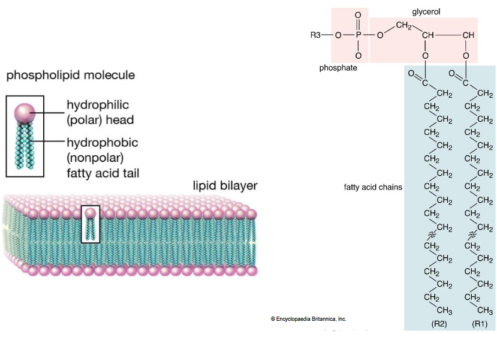
Phospholipids are a crucial component of the lipid bilayer, the fundamental structure of cell membranes. Here’s how phospholipids contribute to the structure and function of the lipid bilayer:
Basic Structure: Phospholipids consist of a hydrophilic (water-attracting) head region and two hydrophobic (water-repelling) tail regions. The hydrophilic head contains a phosphate group, which is polar and interacts with water molecules, while the hydrophobic tails consist of fatty acid chains that are nonpolar and repel water.
Arrangement in the Bilayer: In the lipid bilayer, phospholipids arrange themselves in a double layer with their hydrophilic heads facing outward toward the aqueous environment (extracellular space or cytoplasm) and their hydrophobic tails facing inward, away from water. This arrangement creates a hydrophobic core within the membrane, which acts as a barrier to the passage of water-soluble molecules.
Fluidity and Flexibility: Phospholipids confer fluidity and flexibility to the lipid bilayer. The presence of unsaturated fatty acid chains in some phospholipids introduces kinks in the hydrophobic tails, preventing them from packing tightly together. This results in a more fluid and flexible membrane that allows for lateral movement of phospholipids and membrane proteins.
Selective Permeability: The lipid bilayer, composed primarily of phospholipids, exhibits selective permeability, allowing certain molecules to pass through while restricting the passage of others. Small, nonpolar molecules such as oxygen and carbon dioxide can diffuse freely through the lipid bilayer, while larger or charged molecules require specific transport proteins or channels for passage.
6.1.5.1 Phosphatidylinositol
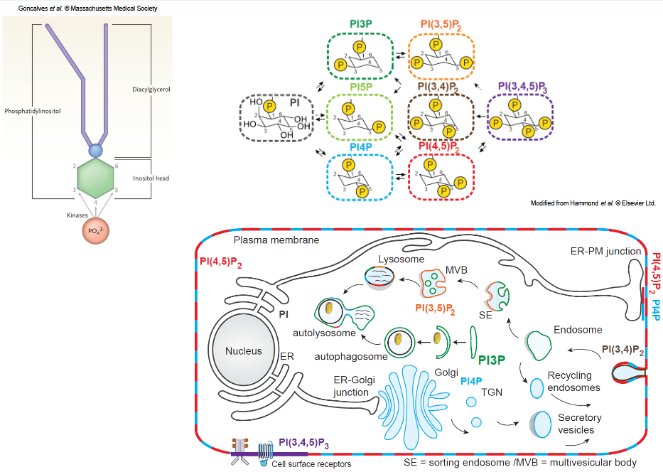
Phosphatidylinositol (PI) is a type of phospholipid that plays essential roles in cell signaling, membrane structure, and various cellular processes. Here are some key aspects of phosphatidylinositol:
Structure: Phosphatidylinositol consists of a glycerol backbone, two fatty acid chains, and a phosphate group linked to the inositol head group. The inositol head group can be phosphorylated at different positions, leading to the formation of various phosphoinositides.
Cell Signaling: Phosphatidylinositol lipids are crucial components of cell signaling pathways. Phosphorylation of the inositol head group at the 3, 4, and 5 positions generates specific phosphoinositides, such as phosphatidylinositol 3-phosphate (PI3P), phosphatidylinositol 4,5-bisphosphate (PI(4,5)P2), and phosphatidylinositol 3,4,5-trisphosphate (PIP3). These phosphoinositides serve as signaling molecules that regulate diverse cellular processes, including cell growth, proliferation, survival, and vesicle trafficking.
Membrane Trafficking: Phosphatidylinositol lipids play critical roles in membrane trafficking and vesicle formation. They act as docking sites for proteins involved in vesicle budding, fusion, and trafficking between cellular compartments, such as the endoplasmic reticulum (ER), Golgi apparatus, endosomes, and lysosomes.
Cytoskeleton Regulation: Phosphatidylinositol lipids contribute to the regulation of the cytoskeleton, which is essential for cell shape, movement, and intracellular transport. Phosphoinositides interact with cytoskeletal proteins, such as actin-binding proteins and microtubule-associated proteins, to coordinate cytoskeletal dynamics and cellular processes such as cell migration and cytokinesis.
Membrane Identity and Function: Phosphatidylinositol lipids help define the identity and function of cellular membranes. By interacting with specific proteins and other lipids, phosphoinositides contribute to membrane curvature, organization, and protein recruitment, thereby regulating membrane structure and function.
Implications in Disease: Dysregulation of phosphatidylinositol signaling has been implicated in various human diseases, including cancer, neurodegenerative disorders, and metabolic diseases. Mutations in enzymes involved in phosphatidylinositol metabolism and signaling pathways can disrupt cellular homeostasis and contribute to disease pathogenesis.
6.1.6 Autophagy Regulation
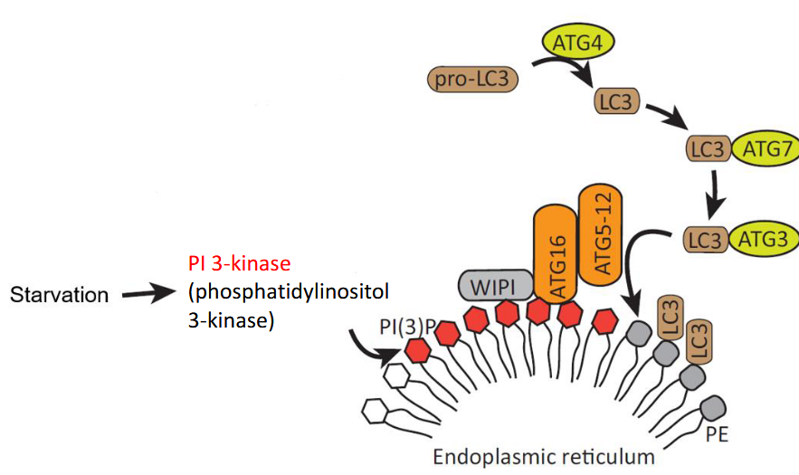
The initiation of autophagy involves a complex series of molecular events orchestrated by several key proteins and signaling pathways. Here’s an overview of the mechanism of autophagy initiation:
Activation of Autophagy-Related Proteins: Autophagy initiation is regulated by a conserved protein kinase complex called the ULK1 (unc-51 like autophagy activating kinase 1) complex, which consists of ULK1, FIP200, ATG13, and ATG101. Under nutrient-rich conditions, the mammalian target of rapamycin complex 1 (mTORC1) phosphorylates ULK1 and inhibits its activity, thereby suppressing autophagy initiation. However, during nutrient deprivation or other stress conditions, mTORC1 is inhibited, leading to the activation of the ULK1 complex.
Nucleation of the Phagophore: Upon activation, the ULK1 complex phosphorylates and activates the class III phosphatidylinositol 3-kinase (PI3K) complex, which includes BECN1 (Beclin 1), VPS34 (vacuolar protein sorting 34), VPS15 (vacuolar protein sorting 15), and ATG14L. The activated PI3K complex generates phosphatidylinositol 3-phosphate (PI3P) on the endoplasmic reticulum (ER) membrane, promoting the nucleation of the phagophore or isolation membrane.
Phagophore Expansion and Cargo Sequestration: The phagophore expands and engulfs cytoplasmic components, including protein aggregates, damaged organelles, and invading pathogens. This process involves the recruitment of ATG proteins, such as ATG12-ATG5-ATG16L1 complex, and the lipidation of LC3 (microtubule-associated protein 1A/1B-light chain 3) to form LC3-II, which is essential for phagophore elongation and cargo sequestration.
Closure of the Autophagosome: As the phagophore expands and engulfs cytoplasmic cargo, it eventually closes to form a double-membraned vesicle called the autophagosome. The outer membrane of the autophagosome fuses with vesicles derived from the ER or other membrane sources, while the inner membrane sequesters the cargo destined for degradation.
Fusion with Lysosomes: After closure, autophagosomes undergo fusion with lysosomes, forming autolysosomes. This fusion event is mediated by proteins such as Rab7 and SNARE proteins. The lysosomal hydrolases within autolysosomes degrade the sequestered cargo, releasing breakdown products for recycling and reuse by the cell.
6.1.6.1 PE Modification During Autophagy
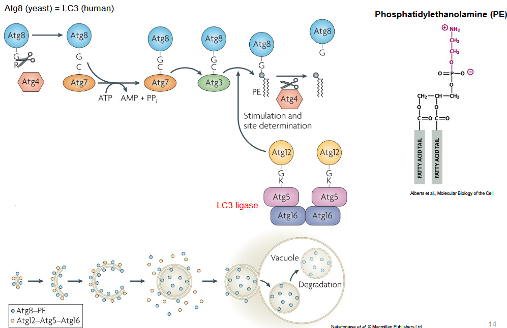
The modification of Atg8 in yeast or LC3 in humans with phosphatidylethanolamine (PE) is a crucial step in the autophagy process. This modification plays a key role in autophagosome formation and cargo sequestration. Here’s how the PE modification of Atg8/LC3 occurs and its significance in autophagy:
Conjugation Process: Atg8 in yeast or LC3 in humans undergo a conjugation process to become lipidated with phosphatidylethanolamine (PE). This process involves a series of enzymatic reactions mediated by several autophagy-related proteins. First, Atg8/LC3 is cleaved at its C-terminus by the cysteine protease Atg4, exposing a glycine residue. Then, the exposed glycine residue is conjugated to the amino group of PE through a ubiquitin-like conjugation system. The conjugation of Atg8/LC3 to PE is catalyzed by the sequential action of Atg7 (E1-like enzyme) and Atg3 (E2-like enzyme). This results in the formation of the lipidated form of Atg8/LC3, known as Atg8-PE or LC3-II, which is associated with the autophagosomal membrane.
Membrane Association: The lipidation of Atg8/LC3 with PE facilitates its association with the autophagosomal membrane. Atg8-PE or LC3-II is recruited to the expanding phagophore, the precursor structure of the autophagosome, where it plays a critical role in membrane elongation and closure. The lipidated form of Atg8/LC3 anchors the autophagosomal membrane to the cytosolic cargo, facilitating cargo sequestration within the autophagosome.
Cargo Sequestration: Atg8/LC3 lipidation with PE is essential for cargo sequestration during autophagy. The lipidated form of Atg8/LC3 acts as a molecular scaffold that binds to specific autophagy receptors, which in turn recognize and tether cargo molecules (such as protein aggregates, damaged organelles, or pathogens) to the autophagosomal membrane. This selective targeting and sequestration of cargo within the autophagosome are crucial for the degradation and recycling of cellular components.
Autophagosome Maturation: The lipidation of Atg8/LC3 with PE also plays a role in autophagosome maturation and fusion with lysosomes. Once formed, autophagosomes undergo fusion with lysosomes to form autolysosomes, where the sequestered cargo is degraded by lysosomal enzymes. Atg8-PE or LC3-II remains associated with the autophagosomal membrane during this process and is eventually recycled upon autolysosome formation.
6.1.6.2 Mechanism
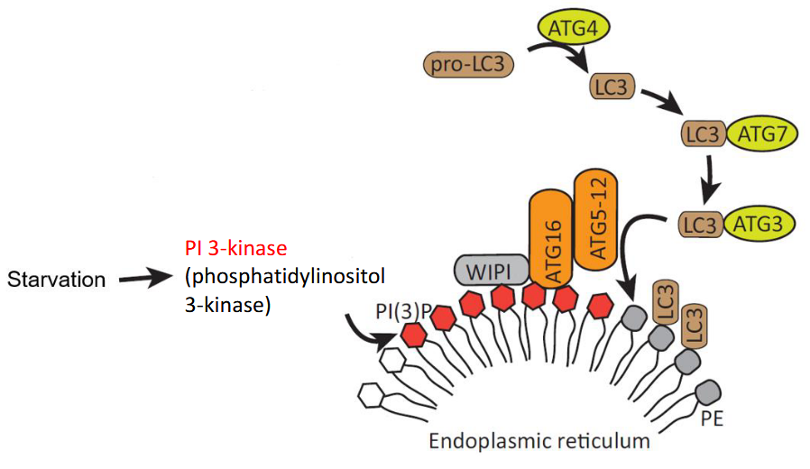
The initiation of autophagy involves various signaling pathways and regulatory proteins, one of which is the phosphatidylinositol 3-kinase (PI3K) complex. Here’s an overview of how PI3K contributes to autophagy initiation:
Formation of the PI3K Complex: The PI3K complex involved in autophagy initiation consists of several subunits, including the class III PI3K, also known as VPS34 (vacuolar protein sorting 34), and its regulatory subunits such as VPS15 (vacuolar protein sorting 15) and Beclin 1 (BECN1). Under basal conditions or during nutrient-rich states, the activity of the PI3K complex is inhibited.
Activation by Stress Signals: Autophagy initiation is often triggered by various stress signals, such as nutrient deprivation, oxidative stress, or accumulation of damaged proteins or organelles. These stress signals lead to the inhibition of the mTOR (mechanistic target of rapamycin) pathway, a negative regulator of autophagy, which in turn relieves the suppression of the PI3K complex.
Phosphatidylinositol 3-Phosphate (PI3P) Production: Upon activation, the PI3K complex catalyzes the phosphorylation of phosphatidylinositol (PI) to generate phosphatidylinositol 3-phosphate (PI3P) on the membranes of various cellular compartments, including the endoplasmic reticulum (ER), Golgi apparatus, and endosomes. PI3P serves as a critical signaling lipid that recruits downstream autophagy-related proteins to initiate autophagosome formation.
Recruitment of Autophagy Machinery: PI3P-enriched membranes act as nucleation sites for the assembly of the autophagy machinery. Autophagy-related proteins containing PI3P-binding domains, such as WIPI proteins (WD-repeat protein interacting with phosphoinositides), DFCP1 (double FYVE-containing protein 1), and FYCO1 (FYVE and coiled-coil domain-containing protein 1), are recruited to these membranes, where they initiate the formation of the phagophore, the precursor structure of the autophagosome.
Phagophore Elongation and Cargo Sequestration: The recruitment of autophagy-related proteins to PI3P-enriched membranes promotes the elongation and expansion of the phagophore, leading to the formation of the autophagosomal membrane. Meanwhile, cargo molecules such as protein aggregates, damaged organelles, or intracellular pathogens are selectively recognized and sequestered within the growing autophagosomal membrane.
Autophagosome Maturation and Fusion with Lysosomes: Following cargo sequestration, the autophagosome matures through membrane fusion events and eventually fuses with lysosomes, forming autolysosomes. Within autolysosomes, the sequestered cargo is degraded by lysosomal hydrolases, and the breakdown products are recycled back into the cytoplasm for reuse.
6.1.6.3 Cargo Selection
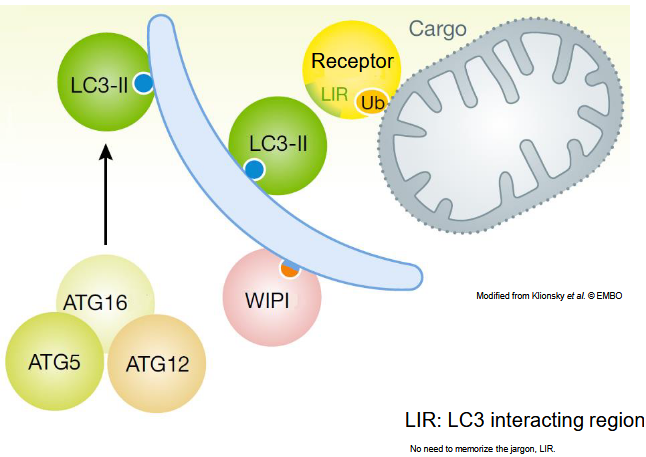
Cargo selection in autophagy is a highly regulated process that ensures the selective degradation of specific cellular components, such as damaged organelles, protein aggregates, and intracellular pathogens, while preserving essential cellular structures. Here’s how cargo selection occurs in autophagy:
Recognition by Autophagy Receptors: Cargo selection begins with the recognition of specific cellular components by autophagy receptors. These receptors contain specific domains that recognize and bind to the cargo molecules destined for degradation. Autophagy receptors often contain LC3-interacting region (LIR) motifs, which allow them to interact with Atg8/LC3 proteins on the autophagosomal membrane.
Targeting Signals and Tags: Cargo molecules destined for degradation may contain specific targeting signals or post-translational modifications that mark them for recognition by autophagy receptors. For example, damaged organelles may expose specific surface markers or undergo modifications that make them recognizable by autophagy receptors.
Interaction with Autophagy Machinery: Once bound to autophagy receptors, cargo molecules are targeted to the expanding phagophore, the precursor structure of the autophagosome. The autophagy machinery, including Atg proteins and the lipidated form of Atg8/LC3 (such as Atg8-PE or LC3-II), facilitates the sequestration of cargo within the growing autophagosomal membrane.
Cargo Sequestration and Encapsulation: The autophagosomal membrane engulfs the cargo molecules, forming a double-membraned vesicle known as the autophagosome. The lipidated form of Atg8/LC3 anchors the autophagosomal membrane to the cargo, facilitating cargo sequestration within the autophagosome. This process ensures that only selected cargo molecules are enclosed within the autophagosomal vesicle.
Selective Degradation in Autolysosomes: Autophagosomes subsequently fuse with lysosomes, forming autolysosomes, where the sequestered cargo is degraded by lysosomal hydrolases. The degradation products are then recycled back into the cytoplasm for reuse by the cell. Selective cargo degradation ensures the removal of damaged or unnecessary cellular components while preserving essential cellular structures and functions.
6.1.6.4 Receptors
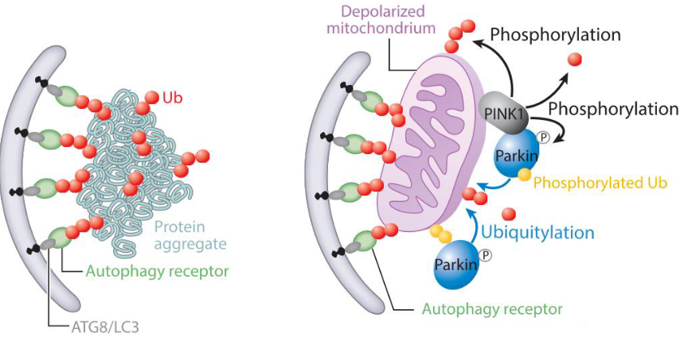
Aggrephagy and mitophagy are specialized forms of autophagy that target protein aggregates and damaged mitochondria, respectively, for degradation. The selective recognition and targeting of cargo in these processes involve specific receptors that play crucial roles in cargo recognition and autophagosome formation. Here are the receptors involved in aggrephagy and mitophagy:
Receptors in Aggrephagy: Aggrephagy refers to the selective degradation of protein aggregates by autophagy. Several receptors have been identified to mediate the recognition and targeting of protein aggregates for autophagic degradation. Some of the key receptors involved in aggrephagy include:
p62/SQSTM1 (Sequestosome 1): p62 is a multifunctional protein that contains several domains, including an LC3-interacting region (LIR) motif. p62 binds to ubiquitinated protein aggregates via its ubiquitin-binding domain (UBA) and interacts with LC3 on the autophagosomal membrane, facilitating the sequestration of protein aggregates into autophagosomes.
NBR1 (Neighbor of BRCA1 Gene 1): NBR1 is another autophagy receptor that contains LIR motifs and UBA domains. Similar to p62, NBR1 binds to ubiquitinated protein aggregates and recruits autophagy machinery components to promote their degradation by autophagy.
Optineurin: Optineurin is a protein involved in various cellular processes, including autophagy. It contains LIR motifs and interacts with both ubiquitin and LC3, facilitating the selective targeting of protein aggregates for autophagic degradation.
Receptors in Mitophagy: Mitophagy specifically targets damaged or dysfunctional mitochondria for degradation to maintain cellular homeostasis. The selective recognition and targeting of mitochondria for degradation involve specific receptors that recognize mitochondrial damage or stress signals. Some of the key receptors involved in mitophagy include:
PINK1 (PTEN-induced putative kinase 1): PINK1 is a mitochondrial kinase that accumulates on the outer mitochondrial membrane (OMM) of damaged mitochondria. Upon mitochondrial depolarization, PINK1 is stabilized and phosphorylates both Parkin and mitochondrial substrates. This recruits Parkin to the depolarized mitochondria, where it ubiquitinates mitochondrial proteins, marking them for selective degradation.
Parkin: Parkin is an E3 ubiquitin ligase that is recruited to depolarized mitochondria by PINK1. Once recruited, Parkin ubiquitinates proteins on the OMM, leading to the recruitment of autophagy receptors such as p62/SQSTM1 and optineurin. These receptors bind to ubiquitinated mitochondrial proteins and interact with LC3 on the autophagosomal membrane, facilitating the engulfment of damaged mitochondria into autophagosomes for degradation.
BNIP3 (BCL2/adenovirus E1B 19 kDa protein-interacting protein 3): BNIP3 is a mitochondrial outer membrane protein that contains an LC3-interacting region (LIR) motif. During hypoxia or other stress conditions, BNIP3 binds to LC3 on the autophagosomal membrane, mediating the selective engulfment of damaged mitochondria for degradation.
6.2 Autophagy and Neurodegeneration
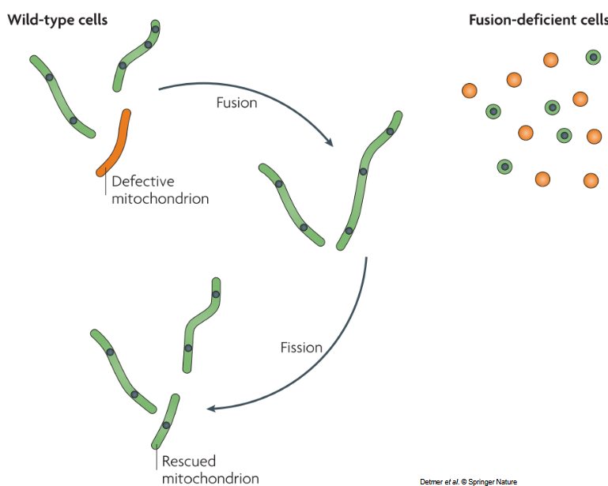
Mitochondrial dynamics, which include processes such as fusion, fission, and mitochondrial movement, play a crucial role in maintaining mitochondrial function and cellular homeostasis. Here’s how mitochondrial dynamics contribute to protecting mitochondrial function:
Mitochondrial Quality Control: Mitochondrial dynamics participate in quality control mechanisms by regulating the turnover of damaged or dysfunctional mitochondria. Fusion facilitates the mixing of mitochondrial contents, allowing damaged mitochondria to exchange components with healthy ones, which may help dilute damaged proteins or DNA. Fission, on the other hand, segregates damaged portions of mitochondria, facilitating their selective removal by mitophagy.
Energy Production and Metabolism: Mitochondrial fusion promotes the exchange of mitochondrial DNA, proteins, and metabolites, optimizing mitochondrial function and energy production. By creating interconnected mitochondrial networks, fusion helps to maintain efficient electron transport chain complexes, ensuring proper ATP production and metabolic homeostasis. Additionally, fusion can rescue partially dysfunctional mitochondria by complementing missing or defective components.
Distribution of Mitochondria: Mitochondrial movement and distribution are essential for ensuring a balanced distribution of mitochondria throughout the cell, particularly in cells with high energy demands or polarized structures. Dynamic positioning of mitochondria allows them to respond rapidly to local energy needs, such as ATP production near sites of high metabolic activity or calcium buffering in regions with elevated calcium levels.
Mitochondrial Adaptation to Stress: Mitochondrial dynamics enable rapid responses to cellular stressors by modulating mitochondrial morphology and function. Under stress conditions such as nutrient deprivation, oxidative stress, or changes in energy demand, mitochondrial dynamics can shift towards fusion or fission to optimize mitochondrial function and promote cellular survival. For example, fusion can mitigate stress-induced mitochondrial fragmentation and maintain mitochondrial integrity.
Apoptosis Regulation: Mitochondrial dynamics also play a role in regulating apoptosis, a programmed cell death process. Alterations in mitochondrial fusion and fission dynamics can influence mitochondrial morphology and membrane permeability, affecting the release of apoptotic factors such as cytochrome c. Balanced mitochondrial dynamics contribute to cell survival by preventing excessive mitochondrial fragmentation and apoptosis induction.
6.2.1 If Mitochondria Do Not Fuse or Divide
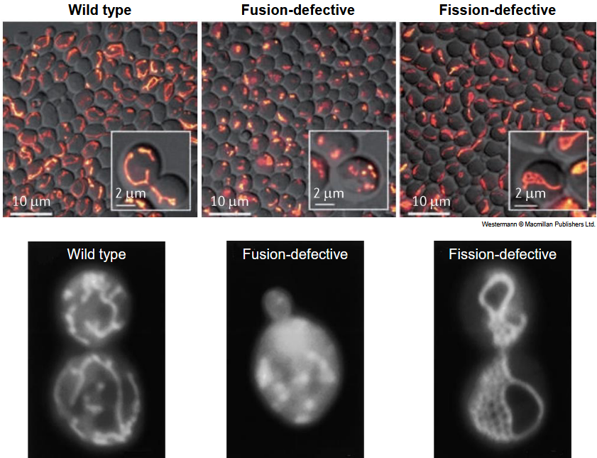
If mitochondria are unable to fuse or divide properly, it can lead to various cellular dysfunctions and pathologies due to the disruption of mitochondrial dynamics. Here are some consequences of impaired mitochondrial fusion or fission:
Accumulation of Damaged Mitochondria: Without fusion, damaged mitochondria cannot mix their contents with healthy mitochondria, leading to the accumulation of dysfunctional components such as damaged proteins, lipids, and DNA. Similarly, impaired fission prevents the segregation and removal of damaged portions of mitochondria, further exacerbating mitochondrial dysfunction.
Mitochondrial Fragmentation: In the absence of fusion, mitochondria may undergo excessive fission, leading to mitochondrial fragmentation and the formation of smaller, dysfunctional organelles. Fragmented mitochondria have reduced capacity for ATP production, compromised membrane potential, and increased susceptibility to oxidative stress and apoptosis.
Energy Deficiency: Mitochondrial fusion is essential for maintaining interconnected mitochondrial networks that facilitate efficient ATP production and metabolic coordination. Impaired fusion results in fragmented mitochondria with reduced respiratory capacity, leading to cellular energy deficits and metabolic dysfunction.
Cellular Stress Sensitivity: Proper mitochondrial dynamics play a crucial role in cellular stress responses by modulating mitochondrial morphology and function. Cells with impaired fusion or fission may exhibit heightened sensitivity to various stressors such as nutrient deprivation, oxidative stress, or changes in energy demand, leading to increased susceptibility to cell death or dysfunction.
Neurological Disorders: Dysfunction in mitochondrial dynamics has been implicated in the pathogenesis of neurodegenerative diseases such as Parkinson’s disease, Alzheimer’s disease, and Huntington’s disease. Impaired mitochondrial fusion or fission can disrupt neuronal function, synaptic transmission, and neuronal survival, contributing to the progression of neurological disorders.
6.2.2 Drp1-Mediated Fission
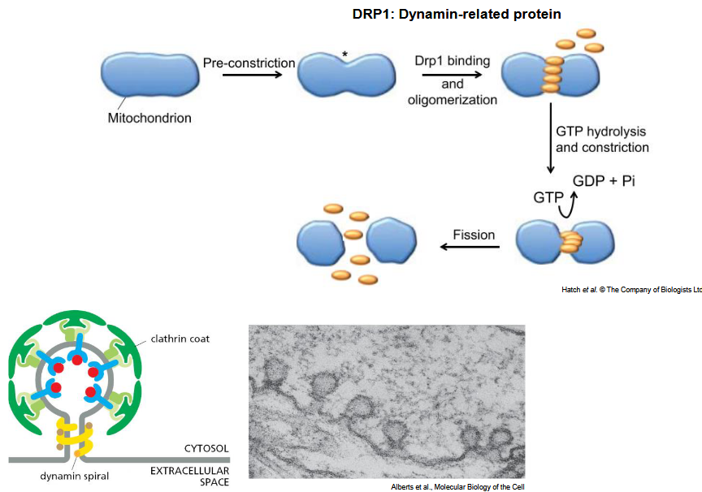
Dynamin-related protein 1 (Drp1) is a key regulator of mitochondrial fission, a process that involves the division of mitochondria into smaller organelles. Here’s how Drp1-mediated fission of mitochondria occurs:
Localization to Mitochondria: Drp1 is primarily a cytosolic protein, but it translocates to the outer mitochondrial membrane (OMM) in response to signals that trigger mitochondrial fission. The recruitment and activation of Drp1 at the OMM are tightly regulated by various factors, including post-translational modifications and binding partners.
Formation of Oligomeric Rings: Upon translocation to the OMM, Drp1 assembles into higher-order structures, forming spiral or ring-like oligomers around constricted regions of mitochondria. This oligomerization process is facilitated by the GTPase activity of Drp1 and is essential for the subsequent scission of mitochondria.
Constriction of Mitochondria: As Drp1 oligomers assemble on the OMM, they constrict the mitochondrial membrane at specific sites, often at the points where ER-mitochondria contact sites are located. This constriction process involves the coordinated action of Drp1 and other proteins, such as mitochondrial fission factor (Mff) and mitochondrial dynamics proteins of 49 and 51 kDa (MiD49/51), which serve as receptors for Drp1 recruitment.
Fission Machinery Activation: Once the mitochondria are constricted by Drp1 oligomers, the fission machinery is activated to complete the division process. GTP hydrolysis by Drp1 induces a conformational change that triggers the mechanical force required for mitochondrial scission. This leads to the division of the mitochondria into two daughter organelles.
Release of Daughter Mitochondria: Following scission, the daughter mitochondria are released into the cytosol as individual organelles. Drp1 remains associated with the mitochondrial fragments for a short period before being recycled back to the cytosol. The daughter mitochondria undergo further remodeling and fusion with other mitochondria to maintain mitochondrial homeostasis and function.
6.2.3 Mitochondrial Fusion
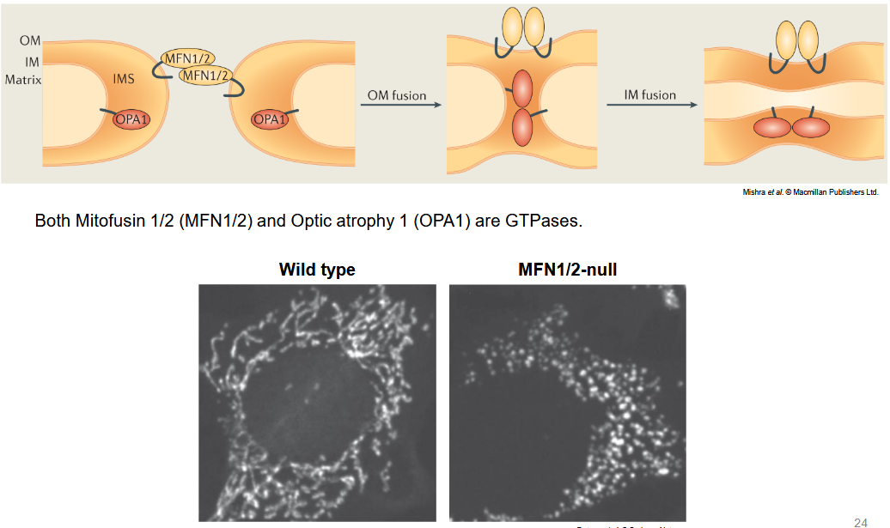
Mitochondrial fusion is a complex process involving the merger of two individual mitochondria to form a single, interconnected organelle. This process is crucial for maintaining mitochondrial function, morphology, and cellular homeostasis. Here’s an overview of the mechanism of mitochondrial fusion:
Outer Membrane Fusion: Mitochondrial fusion begins with the fusion of the outer mitochondrial membranes (OMMs) of two adjacent mitochondria. The initial step involves tethering and docking of the outer membranes through protein-protein interactions. Several protein complexes facilitate this process, including mitofusins (Mfn1 and Mfn2) in mammals and Fzo1 in yeast. These dynamin-like GTPases are anchored in the OMM and mediate the physical interaction between adjacent mitochondria.
GTP Hydrolysis and Membrane Fusion: After tethering, mitofusins/Fzo1 proteins undergo GTP hydrolysis, leading to a conformational change that promotes the fusion of the outer membranes. This process involves the formation of hemifusion intermediates, where the outer leaflets of the lipid bilayers merge, followed by the fusion of the inner leaflets, resulting in the complete fusion of the outer membranes. The exact mechanism by which mitofusins/Fzo1 facilitate membrane fusion is still under investigation but likely involves changes in protein conformation and lipid rearrangement.
Intermembrane Space Fusion: Following outer membrane fusion, the inner mitochondrial membranes (IMMs) of the fused mitochondria come into close proximity. Proteins such as OPA1 (optic atrophy 1) in mammals and Mgm1 in yeast are responsible for mediating fusion of the inner membranes. OPA1 is a dynamin-like GTPase that exists in multiple isoforms, some of which are anchored in the IMM and regulate cristae morphology, while others are released into the intermembrane space (IMS) during fusion. The exact role of OPA1/Mgm1 in inner membrane fusion is not fully understood but likely involves tethering, hemifusion, and lipid mixing similar to outer membrane fusion.
Matrix Content Mixing: Once the outer and inner membranes are fused, the contents of the matrix, including proteins, lipids, and mitochondrial DNA, can mix between the fused mitochondria. This allows for the exchange of metabolites and mitochondrial components, contributing to the maintenance of mitochondrial function, genome integrity, and metabolic homeostasis.
Regulation of Fusion Machinery: Mitochondrial fusion is tightly regulated by various factors, including post-translational modifications of fusion proteins, calcium signaling, mitochondrial dynamics proteins, and cellular energy status. These regulatory mechanisms ensure the proper coordination of fusion events and prevent excessive or aberrant fusion, which could lead to mitochondrial dysfunction and cellular pathology.
6.2.4 PINK1, Parkin, and Mitophagy
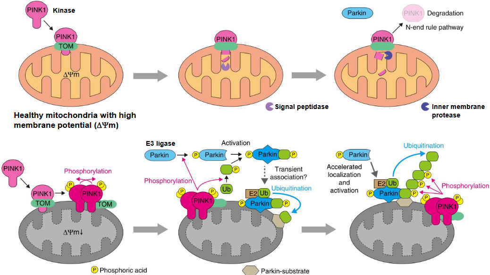
PINK1 (PTEN-induced putative kinase 1) and Parkin are two key proteins involved in the regulation of mitophagy, a selective form of autophagy that targets damaged or dysfunctional mitochondria for degradation. Here’s how PINK1 and Parkin cooperate to initiate and execute mitophagy:
PINK1 Activation: Under normal conditions, PINK1 is continuously imported into healthy mitochondria through the translocase of the outer membrane (TOM) complex and the translocase of the inner membrane (TIM)23 complex. Once inside the mitochondria, PINK1 undergoes proteolytic processing by mitochondrial processing peptidase (MPP) and presenilin-associated rhomboid-like protease (PARL), leading to its degradation in the inner mitochondrial membrane (IMM). However, upon mitochondrial damage or depolarization, PINK1 import is impaired, leading to its accumulation on the outer mitochondrial membrane (OMM).
PINK1 Stabilization and Phosphorylation: Accumulated PINK1 on the OMM becomes stabilized and undergoes autophosphorylation. This phosphorylation activates PINK1’s kinase activity, allowing it to phosphorylate various substrates on the OMM, including Miro and ubiquitin.
Recruitment of Parkin: Phosphorylated ubiquitin on the OMM serves as a signal for Parkin recruitment. Parkin is an E3 ubiquitin ligase that is normally cytosolic but translocates to damaged mitochondria upon activation by PINK1. Parkin is recruited to mitochondria through its interaction with phosphorylated ubiquitin and other OMM proteins.
Ubiquitination of Mitochondrial Proteins: Once recruited to the mitochondria, Parkin catalyzes the ubiquitination of various OMM proteins, including voltage-dependent anion channel (VDAC) and mitofusins (Mfn1 and Mfn2). Ubiquitination of these proteins serves as a signal for the targeting of damaged mitochondria for degradation.
Recognition by Autophagy Machinery: Ubiquitinated proteins on the surface of damaged mitochondria are recognized by autophagy receptors such as p62/SQSTM1 and optineurin. These receptors bind to ubiquitin chains via their ubiquitin-binding domains (UBDs) and interact with LC3 on the forming autophagosomal membrane, thereby linking the damaged mitochondria to the autophagy machinery.
Sequestration and Degradation: The autophagosome engulfs the damaged mitochondria, forming an autophagosome-enclosed structure called the mitophagosome. The mitophagosome subsequently fuses with lysosomes to form an autolysosome, where the engulfed mitochondria are degraded by lysosomal enzymes, leading to the removal of damaged components and recycling of nutrients.